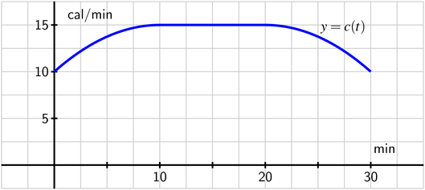

Section4.4The Fundamental Theorem of Calculus¶ permalink
{In this section, we strive to understand the ideas generated by the following important questions:
How can we find the exact value of a definite integral without taking the limit of a Riemann sum?
What is the statement of the Fundamental Theorem of Calculus, and how do antiderivatives of functions play a key role in applying the theorem?
What is the meaning of the definite integral of a rate of change in contexts other than when the rate of change represents velocity?
}
Subsection4.4.1Introduction
Much of our work in Chapter 4 has been motivated by the velocity-distance problem: if we know the instantaneous velocity function, \(v(t)\), for a moving object on a given time interval \([a,b]\), can we determine its exact distance traveled on \([a,b]\)? In the vast majority of our discussion in Sections 4.1- 4.3, we have focused on the fact that this distance traveled is connected to the area bounded by \(y = v(t)\) and the \(t\)-axis on \([a,b]\). In particular, for any nonnegative velocity function \(y = v(t)\) on \([a,b]\), we know that the exact area bounded by the velocity curve and the \(t\)-axis on the interval tells us the total distance traveled, which is also the value of the definite integral \(\int_a^b v(t) \, dt\). In the situation where velocity is sometimes negative, the total area bounded by the velocity function still tells us distance traveled, while the net signed area that the function bounds tells us the object's change in position.
Figure4.4.1A velocity function that is sometimes negative.
Recall, for instance, the introduction to Section 4.2, where we observed that for the velocity function in Figure 4.4.1, the total distance \(D\) traveled by the moving object on \([a,b]\) is
\[
D = A_1 + A_2 + A_3,
\]
while the total change in the object's position on \([a,b]\) is
\[
s(b) - s(a) = A_1 - A_2 + A_3.
\]
While the areas \(A_1\), \(A_2\), and \(A_3\), which are each given by definite integrals, may be computed through limits of Riemann sums (and in select special circumstances through familiar geometric formulas), in the present section we turn our attention to an alternate approach, similar to the one we encountered in Activity 4.1.7. To explore these ideas further, we consider the following preview activity.
Preview Activity
A student with a third floor dormitory window 32 feet off the ground tosses a water balloon straight up in the air with an initial velocity of 16 feet per second. It turns out that the instantaneous velocity of the water balloon is given by the velocity function \(v(t) = -32t + 16\), where \(v\) is measured in feet per second and \(t\) is measured in seconds.
Let \(s(t)\) represent the height of the water balloon above the ground at time \(t\), and note that \(s\) is an antiderivative of \(v\). That is, \(v\) is the derivative of \(s\): \(s'(t) = v(t)\). Find a formula for \(s(t)\) that satisfies the initial condition that the balloon is tossed from 32 feet above ground. In other words, make your formula for \(s\) satisfy \(s(0) = 32\).
At what time does the water balloon reach its maximum height? At what time does the water balloon land?
Compute the three differences \(s(\frac{1}{2}) - s(0)\), \(s(2) - s(\frac{1}{2})\), and \(s(2) - s(0)\). What do these differences represent?
What is the total vertical distance traveled by the water balloon from the time it is tossed until the time it lands?
Sketch a graph of the velocity function \(y = v(t)\) on the time interval \([0,2]\). What is the total net signed area bounded by \(y = v(t)\) and the \(t\)-axis on \([0,2]\)? Answer this question in two ways: first by using your work above, and then by using a familiar geometric formula to compute areas of certain relevant regions.
Subsection4.4.2The Fundamental Theorem of Calculus
\knownindex{\lt main>fundamental theorem of calculus\lt /main>}
Consider the setting where we know the position function \(s(t)\) of an object moving along an axis, as well as its corresponding velocity function \(v(t)\), and for the moment let us assume that \(v(t)\) is positive on \([a,b]\). Then, as shown in Figure 4.4.2,
Figure4.4.2Finding distance traveled when we know an object's velocity function \(v\).
we know two different perspectives on the distance, \(D\), the object travels: one is that \(D = s(b) - s(a)\), which is the object's change in position. The other is that the distance traveled is the area under the velocity curve, which is given by the definite integral, so \(D = \int_a^b v(t) \, dt\).
Of course, since both of these expressions tell us the distance traveled, it follows that they are equal, so
Furthermore, we know that Equation (4.4.1) holds even when velocity is sometimes negative, since \(s(b) - s(a)\) is the object's change in position over \([a,b]\), which is simultaneously measured by the total net signed area on \([a,b]\) given by \(\int_a^b v(t) \, dt\).
Perhaps the most powerful part of Equation (4.4.1) lies in the fact that we can compute the integral's value if we can find a formula for \(s\). Remember, \(s\) and \(v\) are related by the fact that \(v\) is the derivative of \(s\), or equivalently that \(s\) is an antiderivative of \(v\). For example, if we have an object whose velocity is \(v(t) = 3t^2 + 40\) feet per second (which is always nonnegative), and wish to know the distance traveled on the interval \([1,5]\), we have that
where \(s\) is an antiderivative of \(v\). We know that the derivative of \(t^3\) is \(3t^2\) and that the derivative of \(40t\) is \(40\), so it follows that if \(s(t) = t^3 + 40t\), then \(s\) is a function whose derivative is \(v(t) = s'(t) = 3t^2 + 40\), and thus we have found an antiderivative of \(v\). Therefore,
Note the key lesson of this example: to find the distance traveled, we needed to compute the area under a curve, which is given by the definite integral. But to evaluate the integral, we found an antiderivative, \(s\), of the velocity function, and then computed the total change in \(s\) on the interval. In particular, observe that we have found the exact area of the region shown in Figure 4.4.3, and done so without a familiar formula (such as those for the area of a triangle or circle) and without directly computing the limit of a Riemann sum.
Figure4.4.3The exact area of the region enclosed by \(v(t) = 3t^2 + 40\) on \([1,5]\).
As we proceed to thinking about contexts other than just velocity and position, it is advantageous to have a shorthand symbol for a function's antiderivative. In the general setting of a continuous function \(f\), we will often denote an antiderivative of \(f\) by \(F\), so that the relationship between \(F\) and \(f\) is that \(F'(x) = f(x)\) for all relevant \(x\). Using the notation \(V\) in place of \(s\) (so that \(V\) is an antiderivative of \(v\)) in Equation (4.4.1), we find it is equivalent to write that
Now, in the general setting of wanting to evaluate the definite integral \(\int_a^b f(x) \, dx\) for an arbitrary continuous function \(f\), we could certainly think of \(f\) as representing the velocity of some moving object, and \(x\) as the variable that represents time. And again, Equations (4.4.1) and (4.4.2) hold for any continuous velocity function, even when \(v\) is sometimes negative. This leads us to see that Equation (4.4.2) tells us something even more important than the change in position of a moving object: it offers a shortcut route to evaluating any definite integral, provided that we can find an antiderivative of the integrand. The Fundamental Theorem of Calculus (FTC) \knownindex{\lt main>FTC\lt /main>} summarizes these observations.
{
The Fundamental Theorem of Calculus: If \(f\) is a continuous function on \([a,b]\), and \(F\) is any antiderivative of \(f\), then \(\int_a^b f(x) \, dx = F(b) - F(a).\)
}
A common alternate notation for \(F(b) - F(a)\) is
\[
F(b) - F(a) = \left. F(x) \right|_a^b,
\]
where we read the righthand side as “the function \(F\) evaluated from \(a\) to \(b\).” In this notation, the FTC says that
The FTC opens the door to evaluating exactly a wide range of integrals. In particular, if we are interested in a definite integral for which we can find an antiderivative \(F\) for the integrand \(f\), then we can evaluate the integral exactly. For instance since \(\frac{d}{dx}[\frac{1}{3}x^3] = x^2\), the FTC tells us that
But finding an antiderivative can be far from simple; in fact, often finding a formula for an antiderivative is very hard or even impossible. While we can differentiate just about any function, even some relatively simple ones don't have an elementary antiderivative. A significant portion of integral calculus (which is the main focus of second semester college calculus) is devoted to understanding the problem of finding antiderivatives.
Use the Fundamental Theorem of Calculus to evaluate each of the following integrals exactly. For each, sketch a graph of the integrand on the relevant interval and write one sentence that explains the meaning of the value of the integral in terms of the (net signed) area bounded by the curve.
Because \(\frac{d}{dx}[2x - x^2] = 2-2x\), by the Fundamental Theorem of Calculus,
\[
\int_{-1}^4 (2-2x) \, dx = \left. 2x - x^2 \right|_{-1}^4,
\]
and therefore
\[
\int_{-1}^4 (2-2x) \, dx = (2 \cdot 4 - 4^2) - (2(-1) - (-1)^2) = -8 + 3 = -5.
\]
Since \(\frac{d}{dx} [\cos(x)] = -\sin(x)\), an antiderivative of \(f(x) = \sin(x)\) is \(F(x) = -\cos(x)\). Therefore, by the FTC,
\[
\ds \int_{0}^{\frac{\pi}{2}} \sin(x) \, dx = \left. -\cos(x) \right|_{-\frac{\pi}{2}}^{\frac{\pi}{2}},
\]
so
\[
\ds \int_{0}^{\frac{\pi}{2}} \sin(x) \, dx = -\cos(\frac{\pi}{2}) - (-\cos(0)) = -0 + 1 = 1.
\]
Since \(e^x\) is its own derivative, it is also its own antiderivative. Hence,
\[
\int_0^1 e^x \, dx = \left. e^x \right|_0^1 = e^1 - e^0 = e-1.
\]
Note that since \(\frac{d}{dx} [x^6] = 6x^5\), it follows that \(\frac{d}{dx} [\frac{1}{6}x^6] = x^5\), and thus
\[
\ds \int_{-1}^{1} x^5 \, dx = \left. \frac{1}{6}x^6 \right|_{-1}^1 = \frac{1}{6} (1)^6 - \frac{1}{6}(-1)^6 = 0.
\]
Using the sum and constant multiple rules for differentiation, we can see that similar results hold for antidifferentiation, and thus that \(F(x) = \frac{3}{4} x^4 - \frac{2}{3} x^3 - e^x\) is an antiderivative of \(f(x) = 3x^3 - 2x^2 - e^x\). Now, by the FTC,
\begin{align*}
\int_0^2 (3x^3 - 2x^2 - e^x) \, dx \amp = \amp \left. \frac{3}{4} x^4 - \frac{2}{3} x^3 - e^x \right|_0^2\\
\amp = \amp \frac{3}{4} (2)^4 - \frac{2}{3} (2)^3 - e^2 - (\frac{3}{4} (0)^4 - \frac{2}{3} (0)^3 - e^0)\\
\amp = \amp 12 - \frac{16}{3} - e^2 - (0 - 0 - 1)\\
\amp = \amp \frac{17}{3} - e^2.
\end{align*}
Subsection4.4.3Basic antiderivatives
The general problem of finding an antiderivative is difficult. In part, this is due to the fact that we are trying to undo the process of differentiating, and the undoing is much more difficult than the doing. For example, while it is evident that an antiderivative of \(f(x) = \sin(x)\) is \(F(x) = -\cos(x)\) and that an antiderivative of \(g(x) = x^2\) is \(G(x) = \frac{1}{3} x^3\), combinations of \(f\) and \(g\) can be far more complicated. Consider such functions as
What is involved in trying to find an antiderivative for each? From our experience with derivative rules, we know that while derivatives of sums and constant multiples of basic functions are simple to execute, derivatives involving products, quotients, and composites of familiar functions are much more complicated. Thus, it stands to reason that antidifferentiating products, quotients, and composites of basic functions may be even more challenging. We defer our study of all but the most elementary antiderivatives to later in the text.
We do note that each time we have a function for which we know its derivative, we have a function-derivative pair, which also leads us to knowing the antiderivative of a function. For instance, since we know that
\[
\frac{d}{dx}[-\cos(x)] = \sin(x),
\]
it follows that \(F(x) = -\cos(x)\) is an antiderivative of \(f(x) = \sin(x)\). It is equivalent to say that \(f(x) = \sin(x)\) is the derivative of \(F(x) = -\cos(x)\), and thus \(F\) and \(f\) together form the function-derivative pair. Clearly, every basic derivative rule leads us to such a pair, and thus to a known antiderivative. In Activity 4.4.5, we will construct a list of most of the basic antiderivatives we know at this time. Furthermore, those rules will enable us to antidifferentiate sums and constant multiples of basic functions. For example, if \(f(x) = 5\sin(x) - 4x^2\), note that since \(-\cos(x)\) is an antiderivative of \(\sin(x)\) and \(\frac{1}{3}x^3\) is an antiderivative of \(x^2\), it follows that
\[
F(x) = -5\cos(x) - \frac{4}{3}x^3
\]
is an antiderivative of \(f\), by the sum and constant multiple rules for differentiation.
Finally, before proceeding to build a list of common functions whose antiderivatives we know, we revisit the fact that each function has more than one antiderivative. Because the derivative of any constant is zero, any time we seek an arbitrary antiderivative, we may add a constant of our choice. For instance, if we want to determine an antiderivative of \(g(x) = x^2\), we know that \(G(x) = \frac{1}{3}x^3\) is one such function. But we could alternately have chosen \(G(x) = \frac{1}{3}x^3 + 7\), since in this case as well, \(G'(x) = x^2\). In some contexts later on in calculus, it is important to discuss the most general antiderivative of a function. If \(g(x) = x^2\), we say that the general antiderivative \knownindex{\lt main>antiderivative\lt /main>\lt sub>general\lt /sub>} of \(g\) is
\[
G(x) = \frac{1}{3}x^3 + C,
\]
where \(C\) represents an arbitrary real number constant. Regardless of the formula for \(g\), including \(+C\) in the formula for its antiderivative \(G\) results in the most general possible antiderivative.
Our primary current interest in antiderivatives is for use in evaluating definite integrals by the Fundamental Theorem of Calculus. In that situation, the arbitrary constant \(C\) is irrelevant, and thus we usually omit it. To see why, consider the definite integral
\[
\int_0^1 x^2 \, dx.
\]
For the integrand \(g(x) = x^2\), suppose we find and use the general antiderivative \(G(x) = \frac{1}{3} x^3 + C.\) Then, by the FTC,
Specifically, we observe that the \(C\)-values appear as opposites in the evaluation of the integral and thus do not affect the definite integral's value. In the same way, the potential inclusion of \(+C\) with the antiderivative has no bearing on any definite integral, and thus we generally choose to omit this possible constant whenever we evaluate an integral using the Fundamental Theorem of Calculus.
In the following activity, we work to build a list of basic functions whose antiderivatives we already know.
Use your knowledge of derivatives of basic functions to complete the above table of antiderivatives. For each entry, your task is to find a function \(F\) whose derivative is the given function \(f\). When finished, use the FTC and the results in the table to evaluate the three given definite integrals.
HintFor the table, you might start by constructing a list of all the basic functions whose derivative you know. For the three definite integrals, be sure to recall the sum and constant multiple rules, which work not only for differentiating, but also for antidifferentiating.HintFor the table, you might start by constructing a list of all the basic functions whose derivative you know. For example, we know that \(\frac{d}{dx} [\csc(x)] = -\csc(x) \cot(x).\) For the three definite integrals, be sure to recall the sum and constant multiple rules, which work not only for differentiating, but also for antidifferentiating. Then use the FTC.Solution
As we use the Fundamental Theorem of Calculus to evaluate definite integrals, it is essential that we remember and understand the meaning of the numbers we find. We briefly summarize three key interpretations to date.
For a moving object with instantaneous velocity \(v(t)\), the object's change in position on the time interval \([a,b]\) is given by \(\int_a^b v(t) \, dt\), and whenever \(v(t) \ge 0\) on \([a,b]\), \(\int_a^b v(t) \, dt\) tells us the total distance traveled by the object on \([a,b]\).
For any continuous function \(f\), its definite integral \(\int_a^b f(x) \, dx\) represents the total net signed area bounded by \(y = f(x)\) and the \(x\)-axis on \([a,b]\), where regions that lie below the \(x\)-axis have a minus sign associated with their area.
The value of a definite integral is linked to the average value of a function: for a continuous function \(f\) on \([a,b]\), its average value \(f_{\mbox{\tiny{AVG}} [a,b]}\) is given by
\[
f_{\mbox{\tiny{AVG}} [a,b]} = \frac{1}{b-a} \int_a^b f(x) \, dx.
\]
The Fundamental Theorem of Calculus now enables us to evaluate exactly (without taking a limit of Riemann sums) any definite integral for which we are able to find an antiderivative of the integrand.
A slight change in notational perspective allows us to gain even more insight into the meaning of the definite integral. To begin, recall Equation (4.4.2), where we wrote the Fundamental Theorem of Calculus for a velocity function \(v\) with antiderivative \(V\) as
\[
V(b) - V(a) = \int_a^b v(t) \, dt.
\]
If we instead replace \(V\) with \(s\) (which represents position) and replace \(v\) with \(s'\) (since velocity is the derivative of position), Equation (4.4.2) equivalently reads
In words, this version of the FTC tells us that the total change in the object's position function on a particular interval is given by the definite integral of the position function's derivative over that interval.
Of course, this result is not limited to only the setting of position and velocity. Writing the result in terms of a more general function \(f\), we have the Total Change Theorem.
{
The Total Change Theorem: \knownindex{\lt main>total change theorem\lt /main>} If \(f\) is a continuously differentiable function on \([a,b]\) with derivative \(f'\), then
\(
f(b) - f(a) = \int_a^b f'(x) \, dx.
\)
That is, the definite integral of the derivative of a function on \([a,b]\) is the total change of the function itself on \([a,b]\).
}
The Total Change Theorem tells us more about the relationship between the graph of a function and that of its derivative. Recall Figure 1.4.1, which provided one of the first times we saw that heights on the graph of the derivative function come from slopes on the graph of the function itself. That observation occurred in the context where we knew \(f\) and were seeking \(f'\); if now instead we think about knowing \(f'\) and seeking information about \(f\), we can instead say the following:
differences in heights on \(f\) correspond to net signed areas bounded by \(f'\).Figure4.4.7The graphs of \(f'(x) = 4 - 2x\) (at left) and an antiderivative \(f(x) = 4x - x^2\) at right. Differences in heights on \(f\) correspond to net signed areas bounded by \(f'\).
To see why this is so, say we consider the difference \(f(1) - f(0)\). Note that this value is 3, in part because \(f(1) = 3\) and \(f(0) = 0\), but also because the net signed area bounded by \(y = f'(x)\) on \([0,1]\) is 3. That is, \(f(1) - f(0) = \int_0^1 f'(x) \, dx\). A similar pattern holds throughout, including the fact that since the total net signed area bounded by \(f'\) on \([0,4]\) is \(0\), \(\int_0^4 f'(x) \, dx = 0\), so it must be that \(f(4) - f(0) = 0\), so \(f(4) = f(0)\).
Beyond this general observation about area, the Total Change Theorem enables us to consider interesting and important problems where we know the rate of change, and answer key questions about the function whose rate of change we know.
Suppose that pollutants are leaking out of an underground storage tank at a rate of \(r(t)\) gallons/day, where \(t\) is measured in days. It is conjectured that \(r(t)\) is given by the formula \(r(t) = 0.0069t^3 -0.125t^2+11.079\) over a certain 12-day period. The graph of \(y=r(t)\) is given in Figure 4.4.9. What is the meaning of \(\int_4^{10} r(t) \, dt\) and what is its value? What is the average rate at which pollutants are leaving the tank on the time interval \(4 \le t \le 10\)?
Figure4.4.9The rate \(r(t)\) of pollution leaking from a tank, measured in gallons per day.
We know that since \(r(t) \ge 0\), the value of \(\int_4^{10} r(t) \, dt\) is the area under the curve on the interval \([4,10]\). If we think about this area from the perspective of a Riemann sum, the rectangles will have heights measured in gallons per day and widths measured in days, thus the area of each rectangle will have units of
Thus, the definite integral tells us the total number of gallons of pollutant that leak from the tank from day 4 to day 10. The Total Change Theorem tells us the same thing: if we let \(R(t)\) denote the function that measures the total number of gallons of pollutant that have leaked from the tank up to day \(t\), then \(R'(t) = r(t)\), and
\[
\int_4^{10} r(t) \, dt = R(10) - R(4),
\]
which is the total change in the function that measures total gallons leaked over time, thus the number of gallons that have leaked from day 4 to day 10.
To compute the exact value, we use the Fundamental Theorem of Calculus. Antidifferentiating \(r(t) = 0.0069t^3 -0.125t^2+11.079\), we find that
Thus, approximately 44.282 gallons of pollutant leaked over the six day time period.
To find the average rate at which pollutant leaked from the tank over \(4 \le t \le 10\), we want to compute the average value of \(r\) on \([4,10]\). Thus,
During a 30-minute workout, a person riding an exercise machine burns calories at a rate of \(c\) calories per minute, where the function \(y = c(t)\) is given in Figure 4.4.11. On the interval \(0 \le t \le 10\), the formula for \(c\) is \(c(t) = -0.05t^2 + t + 10\), while on \(20 \le t \le 30\), its formula is \(c(t) = -0.05t^2 + 2t - 5\).
Figure4.4.11The rate \(c(t)\) at which a person exercising burns calories, measured in calories per minute.
What is the exact total number of calories the person burns during the first 10 minutes of her workout?
Let \(C(t)\) be an antiderivative of \(c(t)\). What is the meaning of \(C(30) - C(0)\) in the context of the person exercising? Include units on your answer.
Determine the exact average rate at which the person burned calories during the 30-minute workout.
At what time(s), if any, is the instantaneous rate at which the person is burning calories equal to the average rate at which she burns calories, on the time interval \(0 \le t \le 30\)?
What are the units on the area of a rectangle found in a Riemann sum for the function \(y= c(t)\)? What will be the units on area bounded by the curve?
Use a definite integral and the FTC, as well as your work in (a).
Recall the formula for \(c_{\mbox{\tiny{AVG}} [0,30]}\). Think about the relevant integral in terms of three subintervals: \([0,10]\), \([10,20]\), and \([20,30]\).
Think carefully about which function tells you the instantaneous rate at which calories are burned, and consider your result in (c).
Since the units on a rectangle in a Riemann sum are cal/min for the height and min for the width, the units on the area of such a rectangle are calories, and hence the units on area under the curve \(y = c(t)\) are given in total calories. Hence, the total calories burned during the first 10 minutes of the workout is given by the definite integral \(\int_0^{10} c(t) \, dt\). We use the FTC and evaluate the integral, finding that
\begin{align*}
\int_0^{10} (-0.05t^2 + t + 10) \, dt \amp = \amp \left. \left( -\frac{0.05}{3} t^3 + \frac{1}{2} t^2 + 10t \right) \right|_0^{10}\\
\amp = \amp \left( -\frac{0.05}{3} (10)^3 + \frac{1}{2} (10)^2 + 10(10) \right) - (-0 + 0 + 0)\\
\amp = \amp \frac{400}{3} \ \mbox{calories} .
\end{align*}
Thus, the person burned approximately 133.33 calories in the first 10 minutes of the workout.
We observe first that by the Total Change Theorem, \(C(30) - C(0) = \int_0^{30} C'(t) \, dt = \int_0^{30} c(t) \, dt\), and therefore, as discussed in (a), the meaning of this value is the total calories burned on \([0,30]\).
The exact average rate at which the person burned calories on \(0 \le t \le 30\) is given by
\[
c_{\mbox{\tiny{AVG}} [0,30]} = \frac{1}{30-0} \int_0^{30} c(t) \, dt.
\]
To calculate \(\int_0^{30} c(t) \, dt,\) we recognize that \(c(t)\) is defined in piecewise fashion, and use the additive property of the definite integral, which tells us that
\[
\int_0^{30} c(t) \, dt = \int_0^{10} c(t) \, dt + \int_{10}^{20} c(t) \, dt + \int_{20}^{30} c(t) \, dt.
\]
We know from our work in (a) that \(\int_0^{10} c(t) \, dt = \frac{400}{3}\). Since \(c(t) = 15\) is constant on \(10 \le t \le 20\), it follows that \( \int_{10}^{20} c(t) \, dt = 15 \cdot 10 = 150\). And finally, it is straightforward to show using \(c(t) = -0.05t^2 + 2t - 5\) on \(20 \le t \le 30\) that \(\int_{20}^{30} c(t) \, dt = \frac{400}{3}\). Hence,
\begin{align*}
\int_0^{30} c(t) \, dt \amp = \amp \int_0^{10} c(t) \, dt + \int_{10}^{20} c(t) \, dt + \int_{20}^{30} c(t) \, dt\\
\amp = \amp \frac{400}{3} + 150 + \frac{400}{3}\\
\amp = \amp \frac{1250}{3} \approx 416.67 \ \mbox{calories} .
\end{align*}
Now, it follows that the exact average rate at which calories were burned on \([0,30]\) is
\[
c_{\mbox{\tiny{AVG}} [0,30]} = \frac{1}{30-0} \int_0^{30} c(t) \, dt = \frac{1}{30} \cdot \frac{1250}{3} = \frac{1250}{90} \approx 13.89 \ \mbox{cal/min} .
\]
It makes sense intuitively that there must be at least one time at which the instantaneous rate at which calories are burned equals the average rate at which calories are burned, as it would be impossible for a continuous instantaneous rate of change to always be above its average value. Since we know from (c) that \(c_{\mbox{\tiny{AVG}} [0,30]} = \frac{125}{9}\), and \(c(t)\) tells us the instantaneous rate at which calories are burned, it follows that we want to solve the equation
\[
c(t) = \frac{125}{9}.
\]
From the graph, it appears that there are two such values of \(t\) for which this equation is true, one in the first ten minutes, and one in the last ten. For instance, solving
\[
-0.05t^2 + t + 10 = \frac{125}{9},
\]
it follows that \(t = 10 \pm 10\sqrt{2}/3 \approx 14.714, 5.286\), only the second of which lies in \(0 \le t \le 10\). So one time at which the instantaneous rate at which calories are burned equals the average rate on \([0,30]\) is \(t = 10 - 10\sqrt{2}/3 \approx 5.286.\) Similar reasoning shows that the other time is \(t = 20 + 10\sqrt{2}/3 \approx 24.714\).
\item We can find the exact value of a definite integral without taking the limit of a Riemann sum or using a familiar area formula by finding the antiderivative of the integrand, and hence applying the Fundamental Theorem of Calculus.
\item The Fundamental Theorem of Calculus says that if \(f\) is a continuous function on \([a,b]\) and \(F\) is an antiderivative of \(f\), then
\[
\int_a^b f(x) \, dx = F(b) - F(a).
\]
Hence, if we can find an antiderivative for the integrand \(f\), evaluating the definite integral comes from simply computing the change in \(F\) on \([a,b]\).
\item A slightly different perspective on the FTC allows us to restate it as the Total Change Theorem, which says that
\[
\int_a^b f'(x) \, dx = f(b) - f(a),
\]
for any continuously differentiable function \(f\). This means that the definite integral of the instantaneous rate of change of a function \(f\) on an interval \([a,b]\) is equal to the total change in the function \(f\) on \([a,b]\).
\hrulefill
\begin{exercises}
\item The instantaneous velocity (in meters per minute) of a moving object is given by the function \(v\) as pictured in Figure 4.4.12. Assume that on the interval \(0 \le t \le 4\), \(v(t)\) is given by \(v(t) = -\frac{1}{4}t^3 + \frac{3}{2}t^2 + 1\), and that on every other interval \(v\) is piecewise linear, as shown.
Figure4.4.12The velocity function of a moving body.
Determine the exact distance traveled by the object on the time interval \(0 \le t \le 4\).
What is the object's average velocity on \([12,24]\)?
At what time is the object's acceleration greatest?
Suppose that the velocity of the object is increased by a constant value \(c\) for all values of \(t\). What value of \(c\) will make the object's total distance traveled on \([12,24]\) be 210 meters?
\item A function \(f\) is given piecewise by the formula
Determine the exact value of the net signed area enclosed by \(f\) and the \(x\)-axis on the interval \([2,5]\).
Compute the exact average value of \(f\) on \([0,5]\).
Find a formula for a function \(g\) on \(5 \le x \le 7\) so that if we extend the above definition of \(f\) so that \(f(x) = g(x)\) if \(5 \le x \le 7\), it follows that \(\int_0^7 f(x) \, dx = 0.\)
\item When an aircraft attempts to climb as rapidly as
possible, its climb rate (in feet per minute) decreases as altitude
increases, because the air is less dense at higher altitudes.
Given below is a table showing performance data for a certain
single engine aircraft, giving its climb rate at various altitudes, where \(c(h)\) denotes the climb rate of the airplane at an altitude \(h\).
Let a new function called \(m(h)\) measure
the number of minutes required for a plane at altitude \(h\) to climb the
next foot of altitude.
Determine a similar table of values for \(m(h)\) and explain how it is related to the table above. Be sure to explain the units.
Give a careful interpretation of a function whose derivative
is \(m(h)\). Describe what the input is and what the output is. Also,
explain in plain English what the function tells us.
Determine a definite integral whose value tells us exactly the number of minutes required for the airplane to ascend to
10,000 feet of altitude. Clearly explain why the value of this integral has the required meaning.
Use the Riemann sum \(M_5\) to estimate the value of the integral you found in (c). Include units on your result.
\item In Chapter 1, we showed that for an object moving along a straight line with position function \(s(t)\), the object's “average velocity on the interval \([a,b]\)” is given by
More recently in Chapter 4, we found that for an object moving along a straight line with velocity function \(v(t)\), the object's “average value of its velocity function on \([a,b]\)” is
Are the “average velocity on the interval \([a,b]\)” and the “average value of the velocity function on \([a,b]\)” the same thing? Why or why not? Explain.